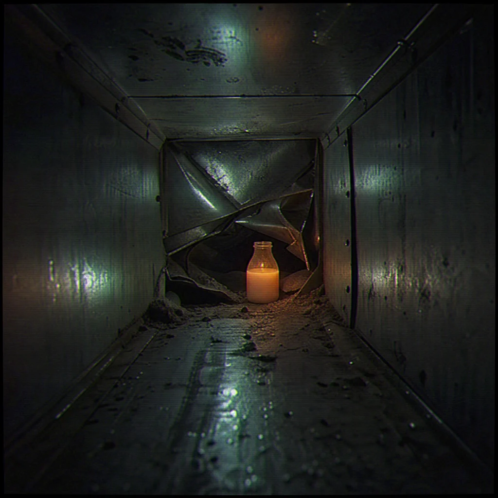

The duct slopes downward, forcing you to slide headfirst. The walls contract, squeezing your chest tight. Every screw head looks like an eye because fear is a lazy designer.
Near a collapsed metal joint, you find a plastic bottle covered in gray dust. It is filled with a sweet-smelling, milky fluid: Almond Water. It is the only thing that can keep the voices and the screen distortion away.